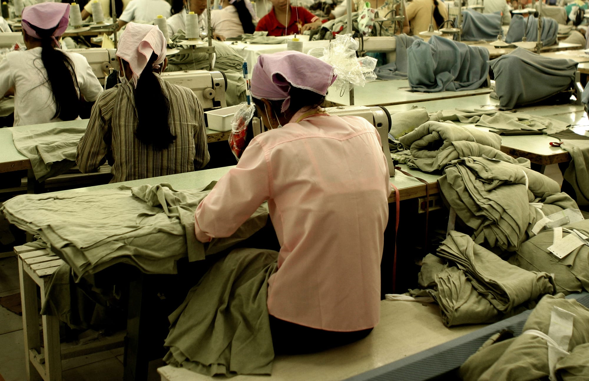
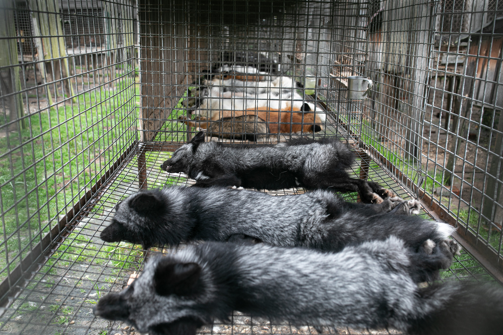
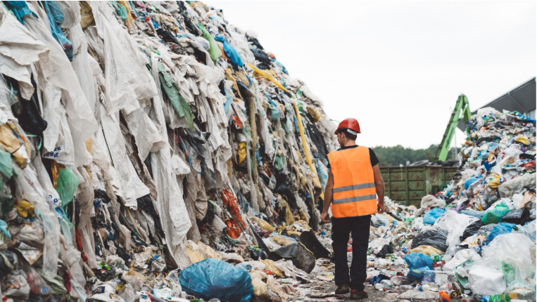

SUSTAINABLE STYLE
FAST FASHION:
What is Fast Fashion?
Fast fashion refers to the rapid production of inexpensive clothing to keep up with the latest trends. It involves the mass production of garments using cheap labor and low-quality materials, resulting in products that are often disposable and short-lived. Fast fashion brands prioritize speed and profit over sustainability and ethical practices, leading to a range of negative consequences.
Globally, the apparel market generates 1.7% of the world's GDP with an estimated value of 1.5 trillion. USD. At the same time, the apparel industry is responsible for 8.8% of global CO2 emissions—more than international aviation and maritime shipping combined. Growth is expected to be 4.8% per year through 2026, meaning that the apparel market will grow by a total of 26% by 2026, with CO2 equivalents increasing by 15%. Environmental Impact
The environmental toll of fast fashion is staggering, driven by its relentless pursuit of cost reduction and accelerated production cycles. This pressure often leads to the cutting of environmental corners, particularly evident in the widespread use of cheap and toxic textile dyes. The fashion industry's reliance on such dyes ranks it among the largest polluters of clean water globally, alongside agriculture. Greenpeace has been advocating for the removal of hazardous chemicals from supply chains through its detoxing fashion campaigns. Moreover, the prevalence of inexpensive textiles increases fast fashion's ecological footprint. Polyester, a common fabric choice, originates from fossil fuels, contributing to climate change. Additionally, polyester garments shed microfibers, further exacerbating oceanic plastic pollution. Even so-called "natural" fabrics like conventional cotton pose significant environmental challenges, demanding vast quantities of water and pesticides, particularly in countries like India and China. This intensive cultivation not only heightens drought risks but also strains water basins and sparks resource competition between fashion companies and local communities. These cumulative impacts highlight the urgent need for more sustainable practices within the fashion industry.
Labor Exploitation
Beyond the ecological toll, fast fashion exacts an extensive human cost. Garment workers endure dangerous conditions, meager wages, and the deprivation of fundamental rights. Further along the supply chain, farmers grapple with exposure to toxic chemicals and exploitative practices, resulting in severe physical and mental health consequences. While some fashion brands claim to pay their workers "at least the minimum legal wage," this assertion is often misleading. In many manufacturing nations such as China, Bangladesh, and India, the minimum wage scarcely covers a fraction of the living wage— the amount necessary to sustain basic needs like food, shelter, healthcare, and education. Consequently, these companies boast about compensating their employees at rates far below what is required for a dignified standard of living, perpetuating a cycle of labor exploitation and injustice.
Harming Aminals
Fast fashion's impact extends beyond human exploitation; animals also suffer dire consequences. The toxic dyes and microfibers released into waterways by fast fashion manufacturing processes pose a significant threat to wildlife in both terrestrial and marine ecosystems. Land and marine animals inadvertently ingest these pollutants, leading to devastating ecological effects as they move up the food chain. Furthermore, the use of animal-derived materials like leather, fur, and wool in fashion directly jeopardizes animal welfare. Shockingly, scandals have unveiled instances where real fur, including from cats and dogs, is deceitfully sold as faux fur to unsuspecting consumers. The grim reality is that the demand for real fur, driven by the fashion industry's practices, has resulted in widespread production under deplorable conditions in fur farms, making it more economically viable than synthetic alternatives. This exploitation of animals in fast fashion underscores the urgent need for ethical and sustainable alternatives in the fashion industry.
